1. 软件包管理
1.1. 主流软件包系统

1.2. 软件包系统的工作方式
软件包文件
- 包文件是组成软件包系统的基本软件单元，它是由组成软件包的文件压缩而成的文件集
库
- 中心库：一般包含了成千上万个软件包，而且每一个都是专门为该发行版本建立和维护的
依赖关系
- 现代软件包管理系统都提供依赖性解决策略，从而确保用户安装了软件包的同时也安装了其所有的依赖关系
高级和低级软件包工具
- 低级工具：用于执行如安装、删除软件包文件等任务
- 高级工具：用于进行元数据搜索及提供依赖性解决
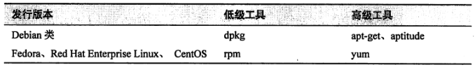
1.3. 常见软件包管理任务
说明
- package_name：软件包的实际名称
- package_file：包含该软件包的文件名
在库里面查找软件包
- 使用高级工具
- 示例：
yum search emacs
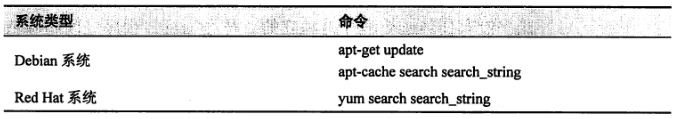
- 安装库中的软件包
- 高级工具允许从库中下载、安装软件包，同时安装所有的依赖包
- 示例：
apt-get update; apt-get install emacs
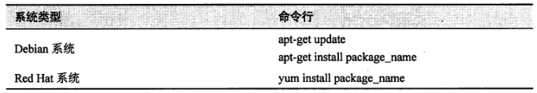
- 安装软件包文件中的软件包
- 低级工具可以直接安装本地软件包文件
- 低级工具不会解决依赖性关系，如果在安装过程中发现缺少依赖包，rpm 就会跳出错误后退出
- 示例：
rpm -i emacs-24.3-23.el7.x86_64.rpm
- 低级工具可以直接安装本地软件包文件
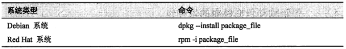
- 删除软件包
- 高级工具和低级工具均可完成卸载软件包的任务
- 示例：
apt-get remove emacs
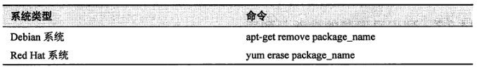
- 更新库中的软件包
- 高级工具仅需一步即可完成更新任务
- 示例：
apt-get update; apt-get upgrade
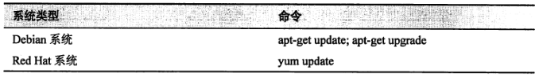
- 更新软件包文件中的软件包
- 如果软件包的更行版本已从非库源中下载，可以使用低级工具进行安装更新从而取代源版本
- 示例：
rpm -U emacs-24.3-23.el7.x86_64.rpm
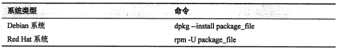
- 列出已安装的软件包列表
- 显示系统上所有已安装的软件包列表
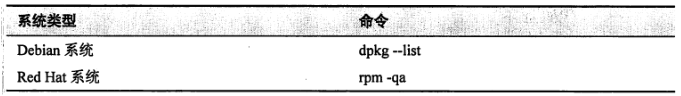
- 判断软件包是否安装
- 使用低级工具
- 示例：
dpkg --status emacs
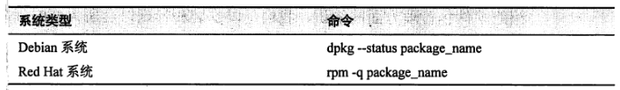
- 显示已安装软件包的相关信息
- 通过已安装的软件包的名称，可以获取该软件包的描述信息
- 示例：
apt-cache show emacs
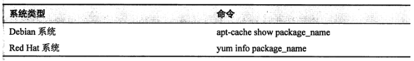
- 查看某具体文件由哪个软件包安装得到
- 查询文件所属
- 示例：
rpm -qf /usr/bin/vim
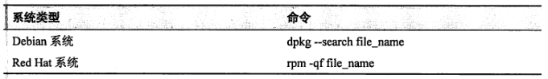